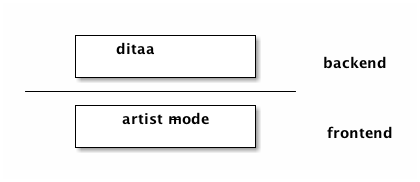

Emacs图表优雅的解决方案
在搞js环境的时候我就说过，Emacs在解决实际问题时，很多时候都是作为"前端"工具出现的。即解决问题的核心工具是一个独立的程序，而Emacs作为一个交互工具，收集用户的输入，反馈其他程序的输出。这样做的好处是：
- 核心功能的开发与面对用户的UI分开，开发人员能更专注于功能的实现。
- 利用Emacs的流行性与其强大的可扩展性，低成本高效率的开发出可供使用的界面。
- 核心功能由于其独立平台的特性，可以方便的与其他需要与其交互的程序实现对接。
这个方案的大概结构是这样的:

这个图的源代码是这样的：
#+begin_src ditaa :file ../static/20170826-emacsChart-1.png
+-----------------+
| ditaa |
| | backend
+-----------------+
----------------------------
+-----------------+
| artist-mode |
| | frontend
+-----------------+
#+end_src
可以看到ditaa 是这个方案的核心存在。而其前端交互使用的是Emacs内置的artist-mode，可以简单的绘制出文本状态的框图。更幸运的是，ditaa已经集成进了org mode。所以不需要任何额外的安装就可以直接在org mode中使用其导出功能。唯一需要配置的语句：
(org-babel-do-load-languages 'org-babel-load-languages '((ditaa . t)))
此时，只要在org mode中加入
#+begin_src ditaa :file some-file-name.png ... #+end_src
在导出org mode的时候，就会自动将框图导出成png文件保存在指定的路径。
至于例子以及转换的规则，请参照视频以及ditaa的文档，这里不做赘述。